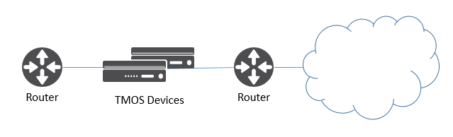
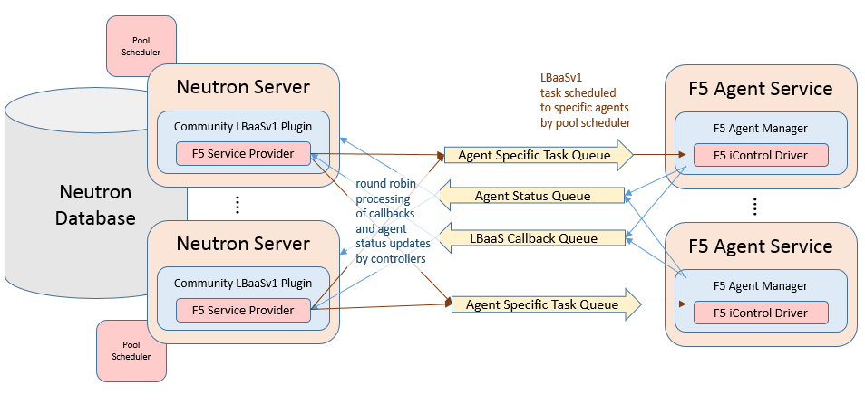
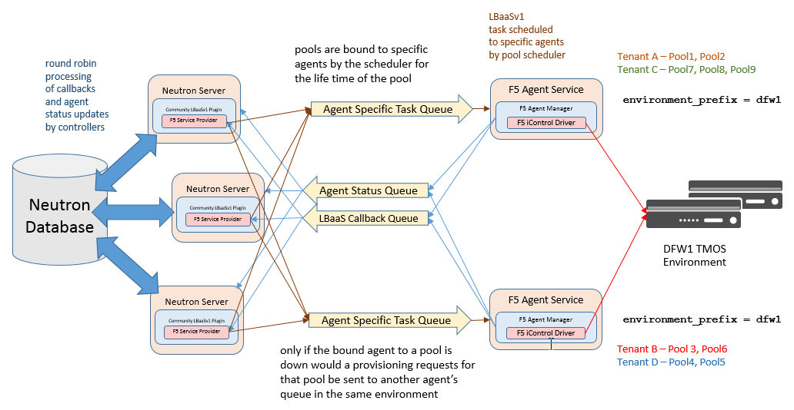
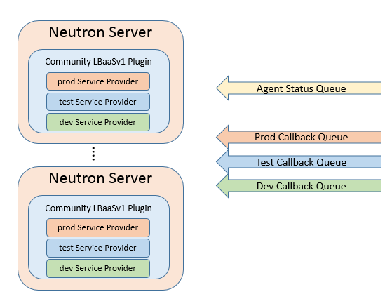
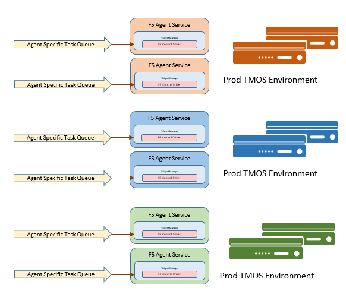
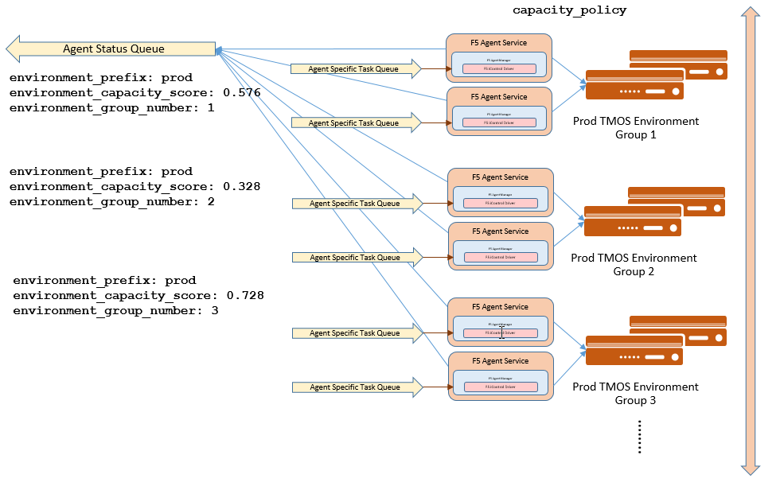
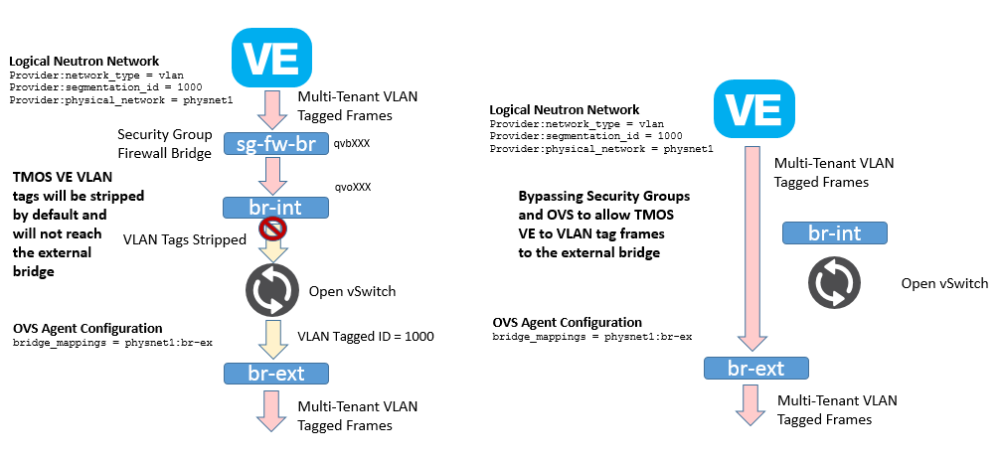
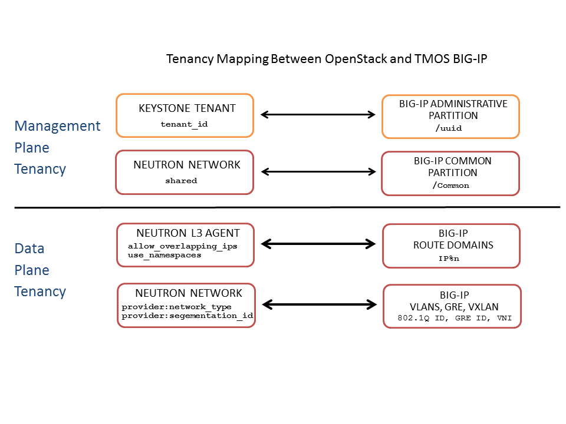

Neutron LBaaSv1 - Version 1.0.10 Release
- Supported Neutron Releases
- Neutron Networking Prerequisites
- LBaaSv1 Component Distribution
- General LBaaSv1 Process Architecture
- Installing LBaaSv1 Components
- Multiple Controllers and Agent Redundancy
- iControl Driver Supported TMOS Versions
- Supported Neutron Network Topologies
- OpenStack and TMOS Multinenancy
- Supported TMOS High Availability Modes
- Agent Configuration Items
- Preparing Your TMOS Device for LBaaSv1
- Troubleshooting Issues
Supported Neutron Releases
The f5 LBaaSv1 service provider drivers and agents support the OpenStack Neutron Icehouse, Juno and Killo releases.
There are no alternations made to the community LBaaSv1 database schema, nor any additional database tables generated. The stock community LoadBalancerPlugin class is used as the service plugin. Any discovered issues with the community LoadBalancerPlugin class and the associated LBaaSv1 database model will need to be monitored and resolved through the OpenStack Neutron community.
Neutron Networking Prerequisites
The f5 LBaaSv1 service provider drivers and agents support two modes of network operations. The Neutron core provider requirements are different for each mode.
Global Routed Mode
For global routed mode, the agent will not attempt to manage any L2 networking on TMOS devices. It is assumed that all required L2 networks and associated L3 addressing and routes to cloud resources have been pre-provisioned on the TMOS devices before LBaaSv1 objects are created. All traffic to and from the TMOS devices should be routed by external networking devices. All VIPs created by the agents will listen for traffic globally on all provisioned L2 networks.
If your TMOS devices are deployed as edge routed devices only, meaning they are typically directly connected to only provider networks, global routed mode is a simplified mode of operations.

In global routed mode, since it is assumed that all routing is pre-provisioned on networking devices, the networking orchestration requirements for Neutron are minimal. Global routed mode should typically function on any Neutron network technology where IP packet forwarding to the TMOS devices can be assured.
Global routing mode is activated on the agent by setting the configuation parameter f5_global_routed_mode to true.
L2 Adjacent Mode
In L2 adjacent mode, the default mode, the LBaaSv1 agent will attempt to provision L2 networks, including VLANs and overlay tunnels, associating TMOS devices with each tenant network contaning a VIP or Member. VIP listening will be restricted to their designated Neutron tenant network and L3 addresses associated with Members will be automatically allocated from Neutron subnets.
L2 adjacent mode follows the micro-segmentation security model for gateways. Since each TMOS device will be L2 adjacent to all tenant networks for which LBaaSv1 objects are provisioned, the traffic flows will not logically pass through another L3 forwarding device, but rather will be isolated to direct L2 communication between the cloud network element and the TMOS devices.

Since the TMOS device associations with many tenant networks are managed by the agents, L2 adjacent mode is a more complex orchestration. The orchestration includes the allocation of L3 addresses from Neutron tenant subnets dynamically for TMOS SelfIPs and SNAT translation addresses. These additional L3 addresses will be allocated from the Neutron subnets associated with LBaaSv1 VIPs or Members.
For L2 adacent mode deployments which utilize overlay tunnels as tenant networks, Neutron MUST be using the ML2 core plugin. Your neutron server configurations should contain:
core_plugin = neutron.plugins.ml2.plugin.Ml2Plugin
By requiring the use of an ML2 core plugin, Neutron standard GRE and VxLAN tunnel overlay networks, which are compatible with using TMOS as a VTEP (virtual tunnel endpoint), are assured rather then the use of proprietary tunneling or encapsulation schemes which are not defined as ML2 network types. ML2 L2 population services, which update the forwarding databases in the VTEPs when changes occur, remove the need any additional control plane orchestration with proprietary network controllers. ML2 provides all that is needed to integrate TMOS devices with Neutron.
Using the standard community ML2 plugin and type drivers, in addition to the L2 population service will meet the f5 LBaaSv1 plugin requirements to function as a VTEP.
When using L2 adjacent mode, Neutron networks associated with LBaaSv1 Vip or Member objects, the Neutron providernet extension MUST also be present. The providernet extension adds attributes to Neutron networks defining appropriate L2 network settings required to assure device connectivity. The f5 LBaaSv1 agent uses providernet attributes to provision L2 connectivity on TMOS devices. If the providernet extension data is not present on a Neutron network, proper L2 isolation and tenancy can not be provisioned on the TMOS devices.
You can determine if your Neutron networks support the providernet extension attributes by showing the details for a Neutron network and checking that the following highlighted attributes exist:
# neutron net-show Provider-VLAN-62 +---------------------------+--------------------------------------+ | Field | Value | +---------------------------+--------------------------------------+ | admin_state_up | True | | id | 07f92400-4bb6-4ebc-9b5e-eb8ffcd5b34c | | name | Provider-VLAN-62 | | provider:network_type | vlan | | provider:physical_network | ph-eth3 | | provider:segmentation_id | 62 | | router:external | False | | shared | True | | status | ACTIVE | | subnets | a89aa39e-3a8e-4f2f-9b57-45aa052b87bf | | tenant_id | 3aef8f59a43943359932300f634513b3 | +---------------------------+--------------------------------------+
LBaaSv1 Component Distribution
The f5 LBaaSv1 solution comprises of three installation packages:
- f5-bigip-common - Common TMOS API libraries
- f5-oslbaasv1-driver - Neutron Service Provider
- f5-oslbaasv1-agent - Agent process
These packages are distributed as Debian deb or Redhat rpm packages. These packages are available at https://devcentral.f5.com.
The f5-oslbaasv1-driver package should be installed on your Neutron controllers where the neutron-server process runs.
The f5-bigip-common and f5-oslbaasv1-agent packages should be installed on hosts which will run your agents. This can include your Neutron controller hosts. Be aware that the agent will attempt to access a Neutron configuration file (/etc/neutron/neutron.conf) for its messaging settings. The easiest way to assure these settings are correct is to simply copy the /etc/neutron/neutron.conf file from your Neutron controller.
General LBaaSv1 Process Architecture
When Neutron LBaaSv1 API calls are issued to your Neutron controller, the community LBaaSv1 plugin will attempt to use either a designated service provider driver, or else the default service provider driver, to provision LBaaSv1 resources.
The f5 LBaaSv1 service provider drivers, running within the Neutron controller process(es), utilize Neutron RPC messaging queues to issue provisioning tasks to specific f5 agent processes. Upon starting and successfully communicating with configured TMOS device API endpoints, each agent process registers its own specific named queue to receive tasks from one or multiple Neutron controllers.

The f5 LBaaSv1 agents make callbacks to the f5 LBaaSv1 service provider drivers to query additional Neutron network, port, and subnet information, allocate Neutron objects like fixed IP address for SelfIP and SNAT translation addresses, and report provisioning and pool status. These callback requests are placed on an RPC message queue which is processed by all listening f5 LBaaSv1 service provider drivers in a round robin fashion. Since all Neutron controller processes are working transactionally off the same backend database, it does not matter which of the available Neutron controller processes handle these callback requests.
You MUST have at least one running f5 service provider driver in a Neutron controller, and you MUST at least have one running agent process. Adding additional service provider drivers, one per Neutron controller, will scale out communications from agents to Neutron. Adding addition agents, on different hosts, with the same environment_prefix and iControl endpoint settings adds scheduled redudancy to the provision process. Neutron LBaaSv1 will always bind pools to specific agents for the life of the pool. The redudancy simply allows other agents associated with the same environment_prefix to handle requests if the bound agent is not active. It is expected that the bound agent be brought back online. If an agent is to be deleted, all pools bound to it should also be deleted. It is also important that two agents which have different iControl endpoint settings, meaning provisioning different sets of TMOS devices, not be active using the same environment_prefix as this will be interpreted by the scheduler as both agents provisioning the same set of TMOS devices.
When a LBaaSv1 API interface is invoked, the f5 LBaaSv1 service provider schedules agent tasks based upon an f5 agent's availabilty as updated via the standard Neutron agent status messages. The agent status handling of f5 LBaaSv2 agents is the same agent registration and status update mechanism used by the standard Neutron L3, Neutron DHCP, and compute node reference networking agent implementation.
You can view all your running Neutron agent processes using the Neutron API agent interfaces. Using the CLI client you can issue the neutron agent-list and neutron agent-show commands.
# neutron agent-list +--------------------------------------+--------------------+------------------------------------------------------+-------+----------------+ | id | agent_type | host | alive | admin_state_up | +--------------------------------------+--------------------+------------------------------------------------------+-------+----------------+ | 034bddd0-0ac3-457a-9e2c-ed456dc2ad53 | Open vSwitch agent | sea-osp-cmp-001 | :-) | True | | 17e447de-6589-4419-ac83-36ffb7e8b328 | Open vSwitch agent | sea-osp-cmp-002 | :-) | True | | 301f6e21-a8f2-4f58-a4a3-38eabc0c2987 | Open vSwitch agent | sea-osp-net-001 | :-) | True | | e4638eb3-2c69-4355-9268-2976ec916314 | Open vSwitch agent | sea-osp-net-002 | :-) | True | | 5ecd96ab-d01e-4a64-92e8-9cd7caa8f25e | L3 agent | sea-osp-net-001 | :-) | True | | b50b8b21-0d0b-4776-a6ec-eeab61590f10 | DHCP agent | sea-osp-net-002 | :-) | True | | 367b0a91-4502-4893-8770-79af8f1f8ef7 | Loadbalancer agent | sea-osp-ctl-001:b739b44f-caab-527f-8ce3-df5527a6981b | :-) | True | | 61d2a814-343a-4ba9-a3c0-caa89adc7de3 | Loadbalancer agent | sea-osp-ctl-002:fd0fb108-2748-5d93-bf46-768c18c71fe1 | :-) | True | +--------------------------------------+--------------------+------------------------------------------------------+-------+----------------+
Installing LBaaSv1 Components
The most basic installation will include one service provider driver and one agent both installed on a Neutron controller. This is the recommended configuration for testing. Once the operation of the LBaaSv1 orchestration is understood, scale out and redudant installations can be added. The Debian and Red Hat package installations assume a single driver and single agent installation. Alterations to the the default installed services to add redudancy and scale out are referenced in following sections of this document.
Neutron Server Plugin Installation
The Neutron LBaaSv1 service provider driver is distributed as a Debian or Red Hat installation package. To install the service provider driver, download the appropriate package to your Neutron controller server host(s) and install it.
Debian / Ubuntu example:
dpkg -i f5-oslbaasv1-driver_1.0.10-1_all.deb
Rad Hat example:
rpm -ivh f5-oslbaasv1-driver-1.0.10-1.noarch.el7.rpm
Changes to the neutron server configuration file will then need to be made to enable LBaaSv1 services and reference the f5 LBaaSv1 service provider driver. Once the changes in configuration are made, the neutron server will then need to be restarted to accept them.
There are two configuration items which need to be set to enable the Neutron LBaaSv1 service and the F5 LBaaSv1 service provider driver. The services entry for Neutron must include a reference to the default community LoadBalancerPlugin. The services configuration entry in the default neutron.conf file contains a comma separated list of python classes which implement extension plugin services. The following example would load the default community LoadBalancerPlugin.
In the neutron.conf file:
service_plugins = neutron.services.loadbalancer.plugin.LoadBalancerPlugin
Once the default community LoadBalancerPlugin plugin is loaded, service provider type driver entries, in the service_providers section of the neutron server configuration, will be examined. In Icehouse and Juno the default location for the service_providers section was in the /etc/neutron/neutron.conf file. In Kilo the service_providers for LBaaS services can be found in the /etc/neutron/neutron_lbaas.conf file. Providing the following service provider type driver entry for the LOADBALANCER plugin service will load the f5 LBaaSv1 service provider driver as the default driver for all LOADBALANCER requests:
service_provider=LOADBALANCER:F5:f5.oslbaasv1driver.drivers.plugin_driver.F5PluginDriver:default
You must have at least one default entry for each plugin service. If the f5 service provider driver is not your default, simply remove the default field from the above entry.
In the default section of your neutron.conf file, the optional f5_loadbalancer_pool_scheduler_driver variable can be set to an alternative agent scheduler. The default value for this setting, f5.oslbaasv1driver.drivers.agent_scheduler.TenantScheduler, causes LBaaSv1 pools to be distributed within an environment with tenant affinity. You should only provide an alternative scheduler if you have an alternative service placement requirement and are capable of writing your own scheduler.
Agent Installation
The Neutron LBaaSv1 agent is distributed as a Debian or Red Hat installation package. To install the agent, download the appropriate package to the host you want to run your agent and install it. This can be the Neutron controller, but does not have to be.
Debian / Ubuntu example:
dpkg -i f5-bigip-common_1.0.10-1_all.deb dpkg -i f5-oslbaasv1-driver_1.0.10-1_all.deb
Rad Hat example:
rpm -ivh f5-bigip-common-1.0.10-1.noarch.el7.rpm rpm -ivh f5-oslbaasv1-driver-1.0.10-1.noarch.el7.rpm
The installation will start a service called f5-oslbaasv1-agent. Stop this service and then make appropriate changes to the /etc/neutron/f5-oslbaasv1-agent.ini file, and then restart the agent. The configuration items in the /etc/neutron/f5-oslbaasv1-agent.ini file are detailed in full later in this document.
The agent service will also expect to find a /etc/neutron/neutron.conf file which contains the configuration for Neutron messaging. To make sure the messaging settings match those of the controller, often it is easiest to simply copy the /etc/neutron/neutron.conf from the controller.
Multiple Controllers and Agent Redundancy
The service provider driver runs within the Neutron controller. When the service provider driver is loaded by the community LBaaS plugin, a named messaging queue is created which will be used to consume all inbound callbacks and status update requests from agents. By default the queue is global for all f5 LBaaSv1 agents. (To run multiple queues, see the differentiated service section below) If mulitple Neutron controllers are started, the various service provider will all listen to the same named message queue. This provides controller redudancy and scale out for the callback and status update calls from agents. Each service provider will consume requests off the queue in a round robin fashion. All Neutron controllers must work off the same Neutron database to make sure no state problems occur with concurrent controller instances running.

When multiple agents services are started using the same environment_prefix each agent will communicate with their configured iControl endpoints, assure that the TMOS systems meet minimal requirements, create a specific named queue unique to this specific agent for processing provisioning requests from service provider drivers, and then report as a valid f5 LBaaSv1 agent via the standard Neutron controller Agent status queue. The agents continue to report their status to the agent queue on a periodic basis, every 10 seconds by default.
When a request for a new pool is made to a Neutron controller, a f5 service provider driver invokes the Tenant scheduler. The scheduler will query all f5 LBaaSv1 agents reporting active and what previously cretaed pools are bound to each. If an active agent is found which already has a bound pool for the same tenant_id as the new pool to be created, that agent will be selected. Otherwise an agent is selected at random for all active agents. The selected agent is then bound to the pool for the life time of the pool This assures that any additional tasks to be peformed on that pool will go back to the same agent. The request to create the pool service will be sent to the bound agent's specific task queue for processing on the agent. When complete the agent will report the outcome of the provisioning task to the LBaaSv1 callback queue where one service provider driver will process the status and update the Neutron database for the new pool.
All subsequent requests for actions on a pool will be sent to the task queue for the bound agent as long as the agent has reported to Neutron as active within the agent update period. If the agent has not reported as active, assumingly because the agent process is no long running, the Tenant scheduler will query if there are any other agents with the same environment_prefix as the non-active the bound agent, and if one is found, the task will be sent to the queue for the first alive agent maching the bound agent's environment _prefix. This provides basic task redudancy, however it does not rebind the pool to the backup active agent. The expectation is that the bound agent will be brought back online at some point to process tasks for all of its bound pools.
LBaaSv1 Differentiated Services and TMOS Scale Out
The f5 LBaaSv1 service provider driver and agents support LBaaS deployments where multiple TMOS environments are required. In order to differentiate between these TMOS environments, distinct service provider entires need to be created in the Neutron controller configuration, one for each enivronment. This is the only way to allow a tenant to pick their environment through the LBaaS API.
Each service provider driver will work as described above with the exception that each environment will create its own queue to process callbacks and status updates from agents in their environemnt. This is in contrast to the default install which creates one global queue to process requests. Additionally, the scheduling of tasks to agents will only consider agents within the environment.
Adding a Service Provider Environment to a Neutron Controller
The default install come with three common environment names available without generating any new drivers.
| Environment | Driver |
|---|---|
| Dev | f5.oslbaasv1driver.drivers.plugin_driver.F5PluginDriverDev |
| Test | f5.oslbaasv1driver.drivers.plugin_driver.F5PluginDriverTest |
| Prod | f5.oslbaasv1driver.drivers.plugin_driver.F5PluginDriverProd |
You can load these environments by adding the following service_provider entries in your Neutron controller configuration and restarting the neutron-server process.
service_provider=LOADBALANCER:DEV:f5.oslbaasv1driver.drivers.plugin_driver.F5PluginDriverDev service_provider=LOADBALANCER:TEST:f5.oslbaasv1driver.drivers.plugin_driver.F5PluginDriverTest service_provider=LOADBALANCER:PROD:f5.oslbaasv1driver.drivers.plugin_driver.F5PluginDriverProd
Adding Agent Environments
The agent task scheduling works exactly as descibed above for differentiated TMOS environments with the exception that each environment will be scheduled separately from each other.
Warning: A differentiated TMOS evironment can not share anything. This precludes the use of vCMP for differentiated environments because vCMP guests share global VLAN IDs.
To place an agent into an environment, there are two setting which need to be set in the agent configuration.
| f5-oslbaasv1-agent.ini setting | Value |
|---|---|
| environment_prefix | must match your service provider environment string, but lowercase. In example for PROD, it would be 'prod' |
| environment_specific_plugin | true |
Setting these configuration settings will cause the agents to use their service provider's specific queue for their callbacks and updates.

Creating Custom Environments
To create environments beyond the Dev, Test, and Prod environments which come with the service provider driver install, a driver generating module is use. On each Neutron controller which will host your customer environment, run the following command:
sudo python -m f5.oslbaasv1driver.utils.generate_env.py provider_name environment_prefix
As example, to add the environment 'DFW1', you would issue the following command:
sudo python -m f5.oslbaasv1driver.utils.generate_env.py DFW1 DFW1
After running this, a driver class will be generated and a service_provider entry in your Neutron controller configuration will be made:
#service_provider=LOADBALANCER:DFW1:f5.oslbaasv1driver.drivers.plugin_driver_Dfw1.F5PluginDriverDfw1
To activate your custom environment you will need to remove the comment '#' from the configuration and restart your neutron-server process.
Capacity Based Scale Out Per Environment
For a specific differentiated service environment, groups of agents can be configured, each associated with distinct iControl endpoints, and thus different TMOS devices. When grouping is specified within an environment, the service provider scheduler will consider the grouping along with a reported environment_capacity_score. Together, the agent grouping and the capacity score, allow the scheduler to scale out a single environment across multiple TMOS device service groups.
To enable environment grouping, set the following in the agent configuration:
| f5-oslbaasv1-agent.ini setting | Value |
|---|---|
| environment_group_number | integer number greater than one (1) |
All agents in the same group should have the same environment_group_number setting.
Capacity is measured by each agent from their configured TMOS devices. The agent will report a single environment_capacity_score for its group every time it reports its agent status to the Neutron controller.
The environment_capacity_score value will be the highest capacity recorded on several collected statistics specified in the capacity_policy setting in the agent configuration. The capacity_policy setting value is a dictionary where the key is the metric name and the value is the max allowed value for that metric. The score is determined simply by dividing the metric collected by the max for that metric specified in the capacity_policy setting. That makes an acceptable reported environment_capacity_score between zero (0) and one (1). If an agent in the group reports a environment_capacity_score of one (1) or greater, it will be considered at capacity.

The following metrics are implemented by the iControl driver:
| Metric Name | Value Collected |
|---|---|
| throughput | total throughput in bps of the TMOS devices |
| inbound_throughput | throughput in bps inbound to TMOS devices |
| outbound_throughput | throughput in bps outbound from TMOS devices |
| active_connections | number of concurrent active actions on a TMOS device |
| tenant_count | number of tenants associated with a TMOS device |
| node_count | number of nodes provisioned on a TMOS device |
| route_domain_count | number of route domains on a TMOS device |
| vlan_count | number of VLANs on a TMOS device |
| tunnel_count | number of GRE and VxLAN overlay tunnels on a TMOS device |
| ssltps | the current measured SSL TPS count on a TMOS device |
| clientssl_profile_count | the number of clientside SSL profiles defined |
You can specify one or multiple metrics.
| f5-oslbaasv1-agent.ini setting | Value |
|---|---|
| capacity_policy | dictionary of metrics to collect and the max value of the metric. For example: capacity_policy = throughput:1000000000, active_connections: 250000, route_domain_count: 512, tunnel_count: 2048 |
When multiple environemnt_group_number designated group of agents are available, and a pool is created where the pool's tenant_id is not associated with an environment group already, the scheduler will try to assign the pool to the group with the last reported lowest environment_capacity_score. If the pool's tenant_id was associated with an agent where the environemnt_group_number for all agents in the group are above capacity, the new pool will be bound to an agent within another group in the environment where capacity is under the limit.
Warning: If you set the capacity_policy and all agent in all groups for an environment are at capacity, services will no long be scheduled. When pools are created for an environment which has no capacity left, the pools will be placed in the error state.Starting Multiple Agents on the Same Host
In order to start more than one agent on the same host, several alterations need to be made for each additional agent instance.
Warning: You should never run two agents for the same environment on the same host, as the hostname is used to help Neutron distinquish between agents. Starting multiple agent processes for different environments, meaning each agent associated with different iControl endpoints, on the same host is a valid configuration.To configure multiple agent processes on the same host:
- Create a unique configuration file for each agent, using /etc/neutron/f5-oslbaasv1-agent.ini as a template. Each configuration file would have distinct iControl endpoints defined for its environment.
- Create additional upstart, init.d, or systemd service definitions for addition agents using the default service definitions as a guide. Each service should point to the appropriate configuration file created in the previous step. The agent process uses Oslo configuration. This means that typically the only thing that would change from the template service definitions would be the --config-file and --log-file comand line arguments used to start the /usr/bin/f5-oslbaasv1-agent executable.
- Start each agent using the name of its unique upstart, init.d, or systemd service name.
iControl Driver Supported TMOS Versions
The agent processes themselves include orchestration methods which are available on TMOS 11.5 and greater. The agents will check for this version of TMOS on all connected devices. If an older version of TMOS is detected, the agents will not register with Neutron.
Supported Neutron Network Topologies
The F5 iControl agent driver supports the following network topologies with either hardware appliances or TMOS virtual editions:
-
Global routed mode where all VIPs are assumed routable from clients and all Members are assumed routable from the TMOS devices themselves. All L2 and L3 objects, including routes, must be pre-provisioned on the TMOS Device Service Group prior to LBaaSv1 provisioning.
Topology f5-oslbaasv1-agent.ini setting 
f5_global_routed_mode = True
Global routed mode uses TMOS AutoMap SNAT for all VIPs. Because no explicit SNAT pools are being defined, sufficient Self IP addresses should be created to handle connection loads.
Warning:In global routed mode, because all access to and from the TMOS devices is assumed globally routed, there is no network segregation between tenant services on the TMOS devices themselves. Overlapping IP address spaces for tenant objects is likewise not available.
-
One-Arm mode where VIP and Members can be provisioned from the same Neutron subnet.
Topology f5-oslbaasv1-agent.ini setting 
f5_global_routed_mode = False
f5_snat_mode = True
optional settings:
f5_snat_addresses_per_subnet = n
where if n is 0, the virtual server will use AutoMap SNAT. If n is > 0, n number of SNAT addresses will be allocated from the Member subnet per active traffic group.
-
Multiple-Arm mode where VIP and Members are provisioned from different Neutron subnets.
Topology f5-oslbaasv1-agent.ini setting 
f5_global_routed_mode = False
f5_snat_mode = True
optional settings:
f5_snat_addresses_per_subnet = n
where if n is 0, the virtual server will use AutoMap SNAT. If n is > 0, n number of SNAT addresses will be allocated from the Member subnet per active traffic group.
-
Gateway routed mode where attemps will be made to create a default gateway forwarding service on the TMOS Device Service Group for Member Neutron subnets
Topology f5-oslbaasv1-agent.ini setting 
f5_global_routed_mode = False
f5_snat_mode = False
For the Neutron network topologies requiring dynamic L2 and L3 provisioning of the TMOS devices, which includes all network topologies except global routed mode, the f5 LBaaSv1 iControl driver supports:
- Provider VLANs - VLANs defined by the admin tenant and shared
- Tenant VLANs - VLANs defined by the admin tenant for other tenants or by the tenant themselves
- Tenant GRE Tunnels - GRE networks defined by the tenant
- Tenant VxLAN Tunnels - VxLAN networks defined by the tenant
VLANs
For VLAN connectivity, the f5 TMOS devices use a mapping between the Neutron network provider:physical_network attribute and TMM interface names. This is analogous to the Open vSwitch agents mapping between the Neutron network provider:physical_network and their interface bridge name. The mapping is created in the f5-oslbaasv1-agent.ini configuration file using in the f5_external_physical_mappings setting. The name of the provider:physical_network entries can be added to a comma separated list with mappings to the TMM interface or LAG trunk name, and a boolean attribute to specify if 802.1q tagging will be applied. An example which would map the provider:physical_network containing 'ph-eth3' to TMM interface 1.1 with 802.1q tagging would look like this:
A default mapping should be included for cases where the provider:physical_network does not match any configuration settings. A default mapping simply uses the word default instead of a known provider:physical_network attribute.
An example that would include the previously illustrated mapping, a default mapping, and LAG trunk mapping, might look like this:
Warning: The default Open vSwitch Neutron networking does not support VLAN tagging by guest instances. Each guest interface is treated as an access port and all VLAN tags will be stripped before frames reach the physical network infrastructure. To allow a TMOS VE guest to function in L2 Adajent mode using VLANs as your tenant network type, the software networking infrastructure which strips VLAN tags from frames must be bypassed. Bypassing the software bridge can be accomplished used the ip, brctl, and ovs-vsctl commands on the compute node after the TMOS VE guest instances has been created. It is not a process which is automated by any Neutorn agent. This requirement only applies to TMOS VE when running as a Nova guest instance.

Tunnels
For GRE and VxLAN tunnels, the f5 TMOS devices expect to communicate with Open vSwitch VTEPs. The VTEP addresses for Open vSwitch VTEPs are learned from their registered Neutron agent configurations tunneling_ip attribute. I.E.:
# neutron agent-show 034bddd0-0ac3-457a-9e2c-ed456dc2ad53
+---------------------+--------------------------------------+
| Field | Value |
+---------------------+--------------------------------------+
| admin_state_up | True |
| agent_type | Open vSwitch agent |
| alive | True |
| binary | neutron-openvswitch-agent |
| configurations | { |
| | "tunnel_types": [ |
| | "gre" |
| | ], |
| | "tunneling_ip": "10.1.0.35", |
| | "bridge_mappings": { |
| | "ph-eth3": "br-eth3" |
| | }, |
| | "l2_population": true, |
| | "devices": 4 |
| | } |
| created_at | 2013-11-15 05:00:23 |
| description | |
| heartbeat_timestamp | 2014-04-22 16:58:21 |
| host | sea-osp-cmp-001 |
| id | 034bddd0-0ac3-457a-9e2c-ed456dc2ad53 |
| started_at | 2014-04-17 22:39:30 |
| topic | N/A |
+---------------------+--------------------------------------+
The ML2 L2 Population service is supported by the f5 LBaaSv1 agent iControl driver, such that only Open vSwitch agents hosting Members will have overlay tunnels built to them for Member IP access. When the ML2 L2 Population service is used, static ARP entries will optionally be created on the TMOS devices to remove the need for them to send ARP broadcast (flooding) across the tunnels to learn the location of Members. In order to support this, the ML2 port binding extensions and segmentation models must be present. The port binding extensions and segmentation model are defined by default with the community ML2 core plugin and Open vSwitch agents on the compute nodes.
When VIPs are placed on tenant overlay networks, the f5 LBaaSv1 agent will send tunnel update RPC messages to the Open vSwitch agents informing them of TMOS device VTEPs. This enables tenant guest virtual machines or network node services to interact with the TMOS provisioned VIPs across overlay networks. An f5 LBaaSv1 agent's connected TMOS VTEP addresses are placed in the agent's configurations and reported to Neutron. The VTEP addresses are listed as tunneling_ips.
# neutron agent-show 014ada1a-91ab-4408-8a81-7be6c4ea8113
+---------------------+-----------------------------------------------------------------------+
| Field | Value |
+---------------------+-----------------------------------------------------------------------+
| admin_state_up | True |
| agent_type | Loadbalancer agent |
| alive | True |
| binary | f5-bigip-lbaas-agent |
| configurations | { |
| | "icontrol_endpoints": { |
| | "10.0.64.165": { |
| | "device_name": "host-10-0-64-165.openstack.f5se.com", |
| | "platform": "Virtual Edition", |
| | "version": "BIG-IP_v11.6.0", |
| | "serial_number": "b720f143-a632-464c-4db92773f2a0" |
| | }, |
| | "10.0.64.164": { |
| | "device_name": "host-10-0-64-164.openstack.f5se.com", |
| | "platform": "Virtual Edition", |
| | "version": "BIG-IP_v11.6.0", |
| | "serial_number": "e1b1f439-72c3-5240-4358bbc45dff" |
| | } |
| | }, |
| | "request_queue_depth": 0, |
| | "environment_prefix": "dev", |
| | "tunneling_ips": |
| | "10.0.63.126", |
| | "10.0.63.125" |
| | ], |
| | "common_networks": {}, |
| | "services": 0, |
| | "environment_capacity_score": 0, |
| | "tunnel_types": [ |
| | "gre" |
| | ], |
| | "environment_group_number": 1, |
| | "bridge_mappings": { |
| | "default": "1.3" |
| | }, |
| | "global_routed_mode": false |
| | } |
| created_at | 2015-08-19 13:08:15 |
| description | |
| heartbeat_timestamp | 2015-08-20 15:19:15 |
| host | sea-osp-ctl-001:f5acc0d3-24d6-5c64-bc75-866dd26310a4 |
| id | 014ada1a-91ab-4408-8a81-7be6c4ea8113 |
| started_at | 2015-08-19 17:30:44 |
| topic | f5-lbaas-process-on-agent |
+---------------------+-----------------------------------------------------------------------+
OpenStack and TMOS Multinenancy
By default, all TMOS objects are created in administrative partitions associated with the OpenStack tenant_id for the Pool.
If the f5-oslbaasv1-agent.ini configuration file setting for use_namespaces is set to True, and it is not configured for global routed mode, each tenant will also have a TMOS route domain created, providing segmentation for IP address spaces between tenants.
If an associated Neutron network for a VIP or Member is marked as shared=True, and the f5 LBaaSv1 agent is not in global routed mode, all associated L2 and L3 objects will be created in the /Common administrative partition and associated with route domain 0 (zero) on all TMOS devices.

Supported TMOS High Availability Modes
The F5 iControl agent driver supports:
- Standalone - No High Availability
- Pair mode - Active / Standby TMOS devices
- ScaleN mode - Multiple Active TMOS devices, up to 4 (four) devices
Agent Configuration Items
The f5 LBaaSv1 agent has many configurable options which will effect its provisioning behavior.
The installation process will automatically start an agent process as a service. You will need to stop the agent service, configure the /etc/neutron/f5-oslbaasv1-agent.init file appropriately, and then restart the agent process.
The default configuration file for the f5 LBaaSv1 agent is located at /etc/neutron/f5-oslbaasv1-agent.ini. Below is a consideration of each setting in that configuration file. The configuration file installed with the agent package contains extensive documention comments as well.
| Setting | Allowed Values | Default Value | Description |
|---|---|---|---|
| General Settings | |||
| debug | True or False | False | Should the agent create verbose debug logging in /var/log/neutron/f5-oslbaasv1-agent.log. You should remember to check the /etc/neutron/neutron.conf settings for debug and verbose as well. |
| periodic_interval | integer number of seconds | 10 | How often the statistics are updated for LBaaSv1 objects assoicated with this agent. |
| service_resync_interval | integer number of seconds | 500 | How often the agent pulls known configurations from Neutron and syncrhonizes and cleans up orphaned configurations on the BIG-IPs. |
| use_namespace | True or False | True | Should all Neutron non-shared subnet addresses be assigned to route domains |
| max_namespaces | integer number of namespaces | 1 | If a tenant attempts to create overlapping subnets within their own networks, this number must be increased to the max number of overlapping subnets that will be supported. By default only one route domain will be created per tenant. If this is increased, it can adversely effect the tenant scaling of the BIG-IPs as maintaining separate routing tables cost control plan memory. |
| static_agent_configuration_data | single or comma separated list | None | This list of name:value attribues will be sent as part of the agent configuration data to the plugin. |
| f5_device_type | external | external | This determines the type of automatica device onboarding. Only external is acceptable with this releaes. |
| f5_ha_type | standalone, pair, or scalen | pair | This determines the way LBaaSv1 will be deployed for HA. |
| f5_sync_mode | auto_sync or replication | replication | This determines the way LBaaSv1 will be provisioned. For auto_sync, only a single TMOS device will be provisioned and DSG syncing used to replicate the configuration objects. For replication, each device will be provisioned independantly. Only replication mode is supported at this time. |
| Environment Settings | |||
| environment_prefix | String prefix | '' (blank string) | This is the prefix this agent will use for all BIG-IP objects. Default is a blank string which will result in BIG-IP objects prefixed with uuid_. |
| environment_specific_plugin | True or False | False | Setting this to True will cause the agent to try and communicate with a service differentiated plugin driver associated with its environment. |
| environment_group_number | integer group number | 1 | This puts the agent in a specific group used when scaling out an environment beyound one service group of BIG-IPs. |
| capacity_policy | dictionary of metrics and max values | None | A policy of metric names and max values for this device service group used to report environment capacity. This is used to determine group scale out. |
| VLAN Settings | |||
| f5_external_physical_mappings | comma separated list | default:1.1:True | Determines how Neutron VLAN networks are created. The format for each mapp entry is [provider:physical_network]:[TMOS interface or trunk name]:[Boolean to tag the VLAN ]. One entry with 'default' as it initial entry should be present to allow for cases where the provider:physical_network does not match any other specified mapping. |
| vlan_binding_driver | vlan binding driver path | f5.oslbaasv1agent.drivers.bigip. vlan_binding.NullBinding | Some systems require the need to bind and prune VLANs ids allowed to specific ports, often for security. |
| interface_port_static_mappings | JSON dictionary | '' (blank string) | The interface_port_static_mappings allows for a JSON encoded dictionary mapping BigIP devices and interfaces to corresponding ports. |
| Tunnel Settings | |||
| f5_vtep_folder | TMOS folder name | Common | For tenant tunneling, this determines the TMOS folder to discover the VTEP interface. |
| f5_vtep_selfip_name | TMOS Self IP name | vtep | For tennant tunneling, this determines the pre-provisioned VTEP Self IP name. |
| advertised_tunnel_types | gre
vxlan gre,vxlan |
gre,vxlan | Specifies the tunnel types the agent advertises via RPC to other VTEPs. This should match your ML2 allowed network_typs. Default is to advertise both gre and vxlan. |
| f5_populate_static_arp | True or False | False | Specifies that if a Pool Member IP address is associated with a GRE or VxLAN tunnel network, in addition to a tunnel fdb record being added, that a static arp entry will be created to avoid the need to learn the Member's MAC address via flooding. | l2_population | True or False | True | The agent will register for Neutron L2 population updates and will populate tunnel fdb entries accordingly. Without L2 population, pool member migration will not function properly. |
| L3 Settings | |||
| f5_global_routed_mode | True or False | False | If set, only L4+ objects will be provisioned. All necessary L2 and L3 routes will be assumed pre-provisioned. SNAT will be truned to AutoMAP on all VIPs, and all L2 and L3 tenancy isolation will not be provisioned. |
| f5_snat_mode | True or False | True | For L3 forwarding, should SNAT be used. If set to False, the LBaaSv1 device will attempt to become the default gateway for the Neutron subnets associated with Member objects. |
| f5_snat_addresses_per_subnet | integer number of SNAT addresses | 1 | If set to 0(zero), AutoMAP SNAT will be used. If set to a positive integer, this number of SNAT addresses will be created per Neutron subnet associated with Pool Members, per active TMOS device in an HA mode. |
| f5_route_domain_strictness | True or False | False | If set to True, tenant route domain isolation will be set to strict and VIPs and Members must be placed in the same route domain. This would mean that all Neutron networks with the shared attribute can not be used for VIPs or Members. |
| f5_common_external_networks | True or False | False | If set to True, any VIP address or Member address associated with a Neutron network with router:external set to True will be created in the Common parition and in the default route domain. |
| common_network_ids | comma separated list | None | List in [vlan]:[neutron network UUID] format. All defined network UUIDs defined will exempt services from creating new VLANs, but will use the /Common/[vlan] specified instead. |
| l3_binding_driver | l3 binding driver path | f5.oslbaasv1agent.drivers.bigip. l3_binding.AllowedAddressPairs | Some system require notification when L3 addresses are bound to ports to open security features or provide forwarding information. |
| l3_binding_static_mappings | JSON dictionary | '' (blank string) | Much like common network ids, if there are known subnets which are bound to BIG-IP neutron ports which need L3 binding, these can be specified statically. |
| Device Driver Settings | |||
| f5_bigip_LBaaSv1_device_driver | python class name of the device driver to use | neutron.services.loadbalancer.drivers. f5.bigip.icontrol_driver.iControlDriver | Only the
neutron.services.loadbalancer.drivers. f5.bigip.icontrol_driver.iControlDriver is supplied. |
| icontrol_hostname | either a single entry or a comma separated list iControl endpoint IP address or FQDNs | 192.168.1.245 | The iControl endpoint to connect to for this agent. If a comma separated list is given, you must include each device in your DSG. If only one address is given, the other device's management address will be learned from the DSG and must be reachable from the LBaaSv1 agent. |
| icontrol_username | valid username for the TMOS device | admin | The iControl endpoint username for this agent |
| icontrol_password | valid password for the TMOS device | admin | The iControl endpoint password for this agent |
| icontrol_connection_retry_interval | integer number of seconds | 10 | How often to attempt to reconnect if iControl connection fails |
| icontrol_vcmp_hostname | iControl endpoint IP address or FQDN | 192.168.1.245 | VCMP host which must have use the same credentials as the BIG-IP guests. |
| icontrol_config_mode | objects or iapp | objects | Determines if iControl objects or the LBaaSv1 iApp are used to provision services. iApp support is experimental in this release. |
| bigiq_hostname | BIG-IQ API endpoint IP or FQDN | bigiqhostname | Single tenant LBaaSv1 support via BIG-IQ. This is experimental in this release. |
| bigiq_admin_password | valid password for a BIG-IQ device | admin | Single tenant LBaaSv1 support via BIG-IQ. This is experimental in this release. |
| bigip_management_username | valid username for a BIG-IP device | admin | The username used by BIG-IQ to manage BIG-IPs for Single tenant LBaaSv1 support via BIG-IQ. This is experimental in this release. |
| bigip_management_password | valid password for a BIG-IP device | admin | The password used by BIG-IQ to manage BIG-IPs for Single tenant LBaaSv1 support via BIG-IQ. This is experimental in this release. |
| openstack_keystone_url | URL | http://keystonserver:5000/v2.0 | OpenStack keystone instance. This is experimental in this release. |
| openstack_admin_username | Keystone admin username | valid Keystone username | Admin OpenStack login to determine if a tenant has BIG-IPs which can be used for Single Tenant LBaaSv1. This is experimental in this release. |
| openstack_admin_password | Keystone admin password | valid Keystone password | Admin OpenStack login to determine if a tenant has BIG-IPs which can be used for Single Tenant LBaaSv1. This is experimental in this release. |
Preparing Your TMOS Device for LBaaSv1
TMOS devices must be on-boarded to support their appropriate high availability mode. All of the following on-boarding steps can be automated using iControl. Below is a listing of all the manual CLI commands needed to complete the TMOS device on-boarding.
Standalone High Availability Mode
The TMOS device must be licensed to support Local Traffic (LTM). The TMOS device should have Local Traffic (LTM) provisioned as Nominal.
To license a TMOS device via the CLI, run:
To provision the Local Traffic (LTM) to nominal via the CLI, run:
tmsh modify sys db provision.extramb value 500
For Standalone Mode, SNAT addresses will get created on, and VIPs will get scheduled to, the default traffic-group-local-only non-floating traffic group.
Pair High Availability Mode
Both TMOS devices must be licensed to support Local Traffic (LTM). The TMOS devices should have Local Traffic (LTM) provisioned as Nominal.
To license a TMOS device via the CLI, run:
To provision the Local Traffic (LTM) to nominal via the CLI, run:
tmsh modify sys db provision.extramb value 500
Both TMOS devices must have their Network Time Protocol servers set to the same NTP server. Both TMOS devices should also have their timezone set to the same timezone.
To set a TMOS device NTP server via the CLI, run:
To set a TMOS device timezone via the CLI, run:
Both TMOS devices must share a common VLAN for HA management communication. Both devices will require a local IP address to communicate cluster heartbeat and synchronization information.
To provision a TMOS device HA VLAN via the CLI, run:
To provision a TMOS device IP address on the HA VLAN via the CLI, run:
Both TMOS devices must have their configuration sync interfaces, connection mirroring, and failover addresses defined.
To define a TMOS device configuration sync address via the CLI, run:
To define a TMOS device connection mirroring address via the CLI, run:
To define a TMOS device failover address via the CLI, run:
Both TMOS devices must have distinct device names before they can be placed in a Device Service Group. Once they have distinct device names, a trust must be built between the devices.
To reset TMOS device name via the CLI, run:
To add a trusted peer from your primary TMOS device via the CLI, run:
Both TMOS devices must be placed into a sync failover Device Service Group to allow active/standby failover. An initial sync must be run on the new sync failover Device Service Group.
To create the sync failover Device Service Group from your primary TMOS device via the CLI, run:
For Pair High Availability Mode, SNAT addresses will get created on, and VIPs will get scheduled to, the default traffic-group-1 floating traffic group.
ScaleN High Availability Mode
All TMOS devices in your ScaleN group must be licensed to support Local Traffic (LTM). The TMOS device should have Local Traffic (LTM) provisioned as Nominal.
To license a TMOS device via the CLI, run:
To provision the Local Traffic (LTM) to nominal via the CLI, run:
tmsh modify sys db provision.extramb value 500
All TMOS devices must have their Network Time Protocol servers set to the same NTP server. Both TMOS devices should also have their timezone set to the same timezone.
To set a TMOS device NTP server via the CLI, run:
To set a TMOS device timezone via the CLI, run:
All TMOS devices must share a common VLAN for HA management communication. All devices will require a local IP address to communicate cluster heartbeat and synchronization information.
To provision a TMOS device HA VLAN via the CLI, run:
To provision a TMOS device IP address on the HA VLAN via the CLI, run:
All TMOS devices must have their configuration sync interfaces, connection mirroring, and failover addresses defined.
To define a TMOS device configuration sync address via the CLI, run:
To define a TMOS device connection mirroring address via the CLI, run:
To define a TMOS device failover address via the CLI, run:
All TMOS devices must have distinct device names before they can be placed in a Device Service Group. Once they have distinct device names, a trust must be built between the devices.
To reset TMOS device name via the CLI, run:
To add a trusted peer from your primary TMOS device for each peer device via the CLI, run:
All TMOS devices must be placed into a sync failover Device Service Group to allow active/standby failover. An initial sync must be run on the new sync failover Device Service Group.
To create the sync failover Device Service Group from your primary TMOS device via the CLI, run:
To enable failover between the active devices you must create traffic groups. The scheme you choose to create traffic groups will depend on your failover group design. The iControl driver in ScaleN failover mode will schedule VIPs and SNAT addresses on traffic groups which are not named traffic-group-1 or traffic-group-local-only. It is required that you create unique named traffic groups for you failover pattern which are associated with an appropriate HA failover order. The iControl driver will schedule the VIP traffic group placement based on which unique named traffic group has least number of VIPs associated with it.
To create one of multiple traffic groups with explicit HA order from your primary TMOS device via the CLI, run:
Tenant Tunnel VTEP Self IPs
In order to terminate GRE or VxLAN tenant tunnels each TMOS device must have VTEP non-floating Self IP addresses configured. The folder and name of the VTEP interface must correspond to the f5_vtep_folder and f5_vtep_selfip_name settings for the agent. The VTEP Self IPs must be able to route IP packets to the rest of the Open vSwitch VTEP addresses.
To create a VTEP Self IP via the CLI,
A connectivity test should be made from each TMOS device to Open vSwitch VTEP address to ensure L3 routing is functioning properly.
Troubleshooting Issues
To troubleshoot problems with the F5 LBaaSv1 Type driver or an agent process, set the global Neutron setting and agent process debug setting to True. Extensive logging will then appear in the neutron-server and f5-bigip-LBaaSv1-agent log files on their respective hosts.